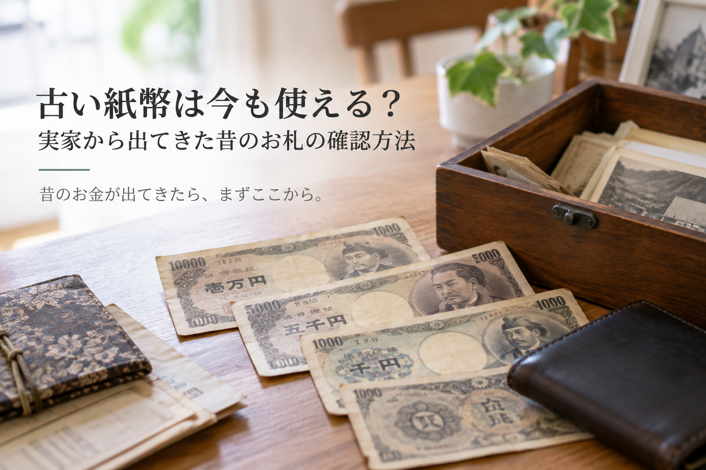

古い紙幣は今も使える？実家から出てきた昔のお札の確認方法
実家の引き出しや古い財布から、見慣れないデザインのお札が出てくることがあります。 「これはもう使えないお金だろう」と処分する前に、少し確認してみてください。
古いお札でも今使えるものがある
日本銀行は、1885年に最初のお札を発行してから今日まで、56種類の銀行券を出してきました。このうち25種類が、 いまも「有効」として扱われています。
「有効」というのは、今は新しく発行されていなくても、額面どおりのお金として使えるという意味です。 日本銀行自身が例に挙げているのが、聖徳太子が描かれた旧一万円券です。昭和61年（1986年）に発行が止まっていますが、 お金としての効力はなくなっていません。見た目が古い、今のデザインと違う、というだけでは「使えない」とは判断できないということです。
参考：日本銀行「これまでに発行されたお札のうち、現在使えるお札はどれですか？」
まず手元のお札のここを見る
手元にあるお札を、次の5つの観点で見てみましょう。
- 額面（いくらと書かれているか）
- 肖像（誰の顔が描かれているか）
- 表と裏の図柄
- 大きさ（今のお札と比べて）
- 状態（破れ・変色などがないか）
これらを見ただけで、本物かどうかや、収集品としての市場価値まで分かるわけではありません。 あくまで「どの券種か」を絞り込むための手がかりです。
昔のお札の具体例
実際に、今も有効なお札に描かれている肖像の一部を紹介します。手元のお札と見比べる参考にしてください。
- 聖徳太子：百円券・千円券・五千円券・一万円券
- 岩倉具視：五百円券
- 板垣退助：百円券
- 伊藤博文：千円券
- 夏目漱石：千円券
- 新渡戸稲造：五千円券
- 福沢諭吉：一万円券（現在のデザインより前のもの）
このように、「この肖像が描かれていれば大丈夫」とは言い切れません。気になるお札があれば、 額面・発行時期・細かな図柄まで含めて、券種単位で確認することが必要です。
参考：日本銀行「現在発行されていない有効な銀行券・貨幣」／ 国立印刷局「お札の基本情報」
使えると分かったらどうする？
今も使えるお札だと分かったら、次のどれを選んでも構いません。
-
そのまま持っておく
判断に迷う場合は、無理に結論を出さず、そのまま保管しておいても問題ありません。
-
普段の支払いで使う
有効なお札であれば、額面どおりのお金として、通常の買い物などにそのまま使えます。
-
日本銀行で引換えを確認する
古くて使いにくい、汚れが気になるという場合は、日本銀行の本支店で今のお札への引換えを確認できます。
使えないお札もある
一方で、56種類のうち31種類は、すでにお金としての効力を失っています。関東大震災後の混乱への対応、戦後の新円切替、 小額通貨の整理など、これまでに3回、法律にもとづいて効力が失われたことがありました。 たとえば1円未満の紙幣や硬貨は、1953年12月31日限りで使えなくなっています。
迷ったら次にどうする？
ここまでで分からないことがあれば、状況に合わせて次のページも見てみてください。